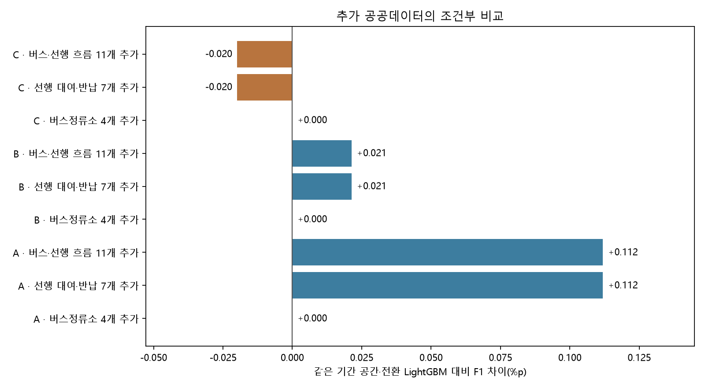

추가 공공데이터가 예측에 도움이 되는가
9개 비교의 계산 검수를 완료한다.
버스정류소 4개, 선행 대여·반납 7개, 결합 11개를 같은 105개 특징 LightGBM에 각각 추가한다. 같은 A/B/C 개발 기간·정답·코호트·학습 설정·종료·보정·정책 선택 절차를 사용한다.
역사 수신·원본 불변·과거 ST-ID 동일성·자정을 넘는 이동의 기준 날짜는 미검증이다. 이 결과는 조건부 자료 비교이며 운영 성능이나 독립 최종 시험 우위로 바꾸어 쓰지 않는다.
| 기간 |
추가 자료 |
전체 F1(%) |
공간·전환 기준 대비(%p) |
전환 재현율(%) |
전환 오경보 차이(건) |
| A |
버스정류소 4개 추가 |
74.155 |
+0.000 |
28.47 |
+0 |
| A |
선행 대여·반납 7개 추가 |
74.267 |
+0.112 |
26.95 |
-1,293 |
| A |
버스·선행 흐름 11개 추가 |
74.267 |
+0.112 |
26.95 |
-1,293 |
| B |
버스정류소 4개 추가 |
72.316 |
+0.000 |
24.94 |
+0 |
| B |
선행 대여·반납 7개 추가 |
72.337 |
+0.021 |
27.54 |
+1,446 |
| B |
버스·선행 흐름 11개 추가 |
72.337 |
+0.021 |
27.54 |
+1,446 |
| C |
버스정류소 4개 추가 |
74.463 |
+0.000 |
22.25 |
+0 |
| C |
선행 대여·반납 7개 추가 |
74.443 |
-0.020 |
24.13 |
+1,051 |
| C |
버스·선행 흐름 11개 추가 |
74.443 |
-0.020 |
24.13 |
+1,051 |

양수인 F1 차이는 점수 증가, 음수인 오류 건수 차이는 오류 감소를 뜻한다. 전체 F1·전환 재현율·오경보를 함께 확인한다. 전체·현재 양수·현재 1~3대 구간을 각 기준 모델과 비교한 CSV를 저장한다.
날짜별 모든 대여소를 함께 묶은 짝지은 1일·7일 블록을 각각 2,000회 다시 뽑는다. 짧은 개발 기간·단일 초기값·여러 후보 비교·선택 편향이 남아 재표집 범위를 보장된 95% 신뢰수준이나 독립 우월성 증명으로 표현하지 않는다.
각 기준 모델 대비 전체 수치 · 날짜별 변동 범위
원천·정제·누락·연결 설명 · 처리 근거와 정확한 특징 정의